Архив типографии · 02.07.2022
Виды переплёта
Твердый переплет книги обычно выбирают для изготовления высокохудожественных изданий.

ТВЕРДЫЙ ПЕРЕПЛЕТ — 7
Он отличается высокими эксплуатационными характеристиками и выглядит наиболее эстетически привлекательным. Книга состоит из внутреннего блока (сшитых тетрадей) и обложки (которая в полиграфии называется крышкой). Крышка изготавливается из картонной основы, по ее отделке различают два варианта: 7БЦ и 7Б.
Внутренние стороны обложки соединены с блоком форзацами — форзацы могут быть запечатаны или выполнены из дизайнерской бумаги. Внутренний блок прошивается нитью, ввиду чего прочность и долговечность такого изделия становится гораздо выше. После того, как блок сшит, на его корешок наклеивают марлю или иной корешковый материал. На верхние и нижние части блока наклеивают каптал — тесьму с утолщенным краем. Подвид твердого переплета — французский переплет, в котором на корешке присутствуют выпуклые элементы, их называют «бинты». Такое оформление добавляет статусности, добротности и часто используется в подарочных корпоративных изданиях, а также в изданиях художественных книг. Также по желанию заказчика возможно изготовление закладки — ляссе. Ляссе — это шелковая лента, прикрепленная к корешку, очень удобна при быстром поиске нужной страницы. Можно сделать ляссе по цвету гармонирующее с общим оформлением книги или служащее небольшим цветовым акцентом.
ТВЕРДЫЙ ПЕРЕПЛЕТ — 7БЦ
(Ц=целофанированный, т.е. с матовой или глянцевой ламинацией) Обложка твердого переплета 7БЦ изготавливается из картонной основы — сторонки и отстав, обтянутых предварительно запечатанной и отламинированной бумагой (возможно с УФ-лаком).
7БЦ — яркий, с полноцветной печатью, прочный и долговечный — по праву является одним из самых широко распространенных видов переплета.
ТВЕРДЫЙ ПЕРЕПЛЕТ — 7Б и 7Т
При производстве книг в переплете 7Б в качестве переплетного материала используются бумвинил, балакрон, кожа, ткань (тип переплета: 7Т, от слова «ткань») и др., которыми кашируется, т.е. проклеивается картон переплетной крышки. Отличие от переплета 7БЦ заключается в том, что для оформления переплета 7Б могут использоваться методы тиснения, конгрева, УФ-лакирования и другие. Возможно комбинирование корешка 7Б и сторонок 7БЦ. Образцы книг в твердом переплете…
МЯГКИЙ ПЕРЕПЛЕТ (КБС): КЛЕЕВОЕ БЕСШВЕЙНОЕ КРЕПЛЕНИЕ
Мягкий переплет — один из наиболее недорогих и быстропроизводимых переплетов. Обложка переплета КБС изготавливается из дизайнерской бумаги, картона или бумаги плотностью до 300 г/м2, предварительно запечатанной и заламинированной. После того, как обложка готова и блок отпечатан, происходит их склейка на специальных клеевых машинах и биговка обложки «на открытие». Мягкий переплет с клеевым бесшовным соединением из-за простоты исполнения и доступной цены является наиболее популярным и одним из самых доступных видов переплета в книгопроизводстве. Наша типография предлагает КБС с использование полиуретанового клея (PUR-клея), придающего надежность, долговечность и улучшающего внешний вид изданий (более тонкий слой, таким образом издание выглядит аккуратнее, улучшается раскрываемость блока, его удобнее читать). Подробнее о КБС и образцы работ…
КШС (иногда называют ШКС), КЛЕЕВОЕ ШВЕЙНОЕ СКРЕПЛЕНИЕ
— способ переплета печатной продукции, предназначенной для интенсивного и длительного использования (журналы, брошюры, каталоги, книги в мягком переплете и т.п.). Термоклеевое скрепление с предварительным шитьем блока на ниткошвейной машине — это шитье блока нитками плюс скрепление КБС. КШС немного дороже КБС, но прочнее и долговечнее, при более низкой себестоимости производства, нежели твердый переплет. Это идеальное решение для высоких требований к прочности продукции при ограничненном бюджете . Шитье тетрадей нитками — давно зарекомендовавший себя способ скрепления книжных блоков: блок делят на несколько тетрадей (по 8, 12, 24, или 32 страницы) тетрадь прошивают капроновыми нитками и соединяют со следующей тетрадью, пока весь блок не будет скреплен. Таким образом сшиваются листы в каждой тетради между собой и все тетради вместе. Далее корешки блоков обжимаются, вклеиваются полиуретановым термоклеем в обложку, и в завершение производится подрезка готового изделия с трех сторон. Переплеты КШС по прочности, сроку службы и удобству существенно превосходят переплеты вида КБС, целиком оправдывая незначительное увеличение стоимости. Образцы книг в твердом переплете 7Б с КШС, 7БЦ с КШС, в мягком переплете с КШС.
ИНТЕГРАЛЬНЫЙ ПЕРЕПЛЕТ
Интегральный переплет также называют голландским. Его изготовлением занимаются всего несколько типографий в России. С первого взгляда интегральный переплет практически не отличается от твердого — он также презентабелен и прочен, но внутреннее строение такого переплета гораздо проще. Стандартный переплет 7БЦ содержит переплетную крышку, выполненную из тяжелого картона и переплетного материала или ламинированной запечатанной бумаги. Его изготовление требует большого количества времени и множества технологических операций. Изготовить интегральную крышку гораздо проще. Это единый картонный лист, который предварительно запечатывают и ламинируют. Затем бигуют и загибают уголки. Есть возможность выбора толщины картона, а следовательно и плотности крышки. Остальные операции изготовления книги в интегральном переплете ничем не отличаются от твердого переплета (здесь также применяется шитый блок — ШКС). В нашей типографии в создании книг в интегральном переплете мы перешли на использование PUR-клея, которые придает дополнительную прочность и улучшает внешний вид изделия (его слой тоньше). Книги в интегральном переплете выигрывают по сравнению с твердым переплетом по весу изданий, они гибкие, но прочные, а также по стоимости; однако могут немного уступать с точки зрения раскрываемости блока, влияющей на удобство использования. Подробнее…
ПЕРЕПЛЕТ НА МЕТАЛЛИЧЕСКУЮ ПРУЖИНУ
Переплет на пружину чаще всего используют для скрепления календарей (квартальных, настольных, настенных листовых и тд.), различных бухгалтерских документов, презентаций и отчетов, докладов и рефератов, каталогов. Основные достоинства переплета на металлическую пружину — он раскрывается на 360 градусов и всегда лежит в одной плоскости, что очень удобно в использовании. Переплет на металлическую пружину надежнее КБС. В случае выбора плотной бумаги, особенно с ламинацией, такое изделие будет очень долговечным, «неубиваемым»… Переплет на пружину часто выбирают для небольших по количеству страниц каталогов, предназначенных для частого использования. В них также делают удобную вырубку с края блока для быстрого поиска нужных разделов.
БРОШЮРОВКА МЕТАЛЛИЧЕСКОЙ СКОБОЙ
Скрепление скобой — один из самых простых видов брошюровки изделий, при котором скрепляют несколько листов скобами по линии сгиба, оно применяется для изданий объемом до 80 полос. Различают скобы обычные и так называемые «евроскобы» — с петлями для подшивки в стандартные папки с кольцами. Обложка такого переплета обычно выполняется из бумаги или картона плотностью до 300 г. Затем скрепляется с помощью 1, 2 реже 3 металлических скоб с блоком изделия. Также стоит обратить внимание, что по техническим требованиям для этого вида переплета количество страниц в блоке должно быть кратно четырем.
КРЕПЛЕНИЕ НА БОЛТАХ
В качестве альтернативы пружине или любому другому переплету возможно использовать соединение блока и крышки болтами. Болты бывают как металлические, так и пластиковые. Цвет металлических болтов — серебро, золото. Пластиковые болты могут быть самых разных цветов, это: синий, черный, желтый, белый и т.д. Следует учесть, что минимальная длина болтов 5 мм, поэтому толщина скрепляемого блока не должна быть меньше 3–4 мм, иначе такая конструкция будет выглядеть непривлекательно.
ШУБЕРЫ, КОРОБКИ И ФУТЛЯРЫ ДЛЯ КНИГ
В нашей типографии возможно заказать футляры для книг практически любых размеров. Как правило, футляры делаются для подарочных и коллекционных изданий, VIP-презентаций, руководств, при печати книг в твердом переплете. Отделка и материал переплета могут быть самыми разнообразными, в том числе и натуральная кожа. Мы разработаем для вас интересные дизайнерские решения футляров для книг и с удовольствием воплотим их в жизнь. Подробнее…
Переплеты также подразделяют на следующие типы
№ 1 — цельнокартонный обрезной; № 2 — цельнокартонный с кантом; № 3 — цельнотканевый мягкий обрезной; № 4 — цельнобумажный жесткий с кантом; № 5 — составной с тканевым корешком и со сторонками, крытыми обложечной бумагой; № 6 — интегральный переплет; № 7 — цельнотканевый жесткий с кантом; № 8 — составной с кантом, со сторонками, крытыми одним видом ткани, и с корешком из др. вида ткани;
Обращаясь к нам, Вы получаете гарантию качества и прекрасного внешнего вида Ваших книг, каталогов, брошюр и другой полиграфии. По тонкостям выбора переплета, переплетным материалам и стоимости работ Вы можете проконсультироваться у наших менеджеров в офисе, по телефону или по электронной почте. Если Вы планируете печать сложного нестандартного издания, можем предложить помощь наших технологов, которые подскажут оптимальный выбор материала и способов отделки каждого конкретного изделия. Мы будем рады Вам помочь! Чтобы получить расчет стоимости печати книг, каталогов, журналов, брошюр, рекламной полиграфии – отправьте запрос. Просим учесть, что мы предлагаем офсетную печать, с тиражами от 300 до нескольких тысяч экземпляров, чем больше тираж, тем выгоднее цена за экземпляр.
По всем вопросам – обращайтесь к вашему менеджеру или звоните +7(499) 280-80-11
Материалы публикации

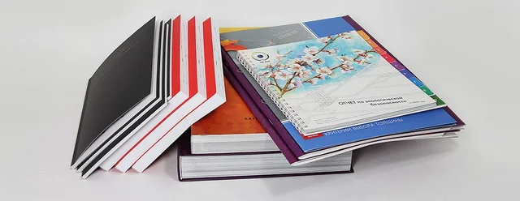
Виды переплётапечать каталогов на пружине 
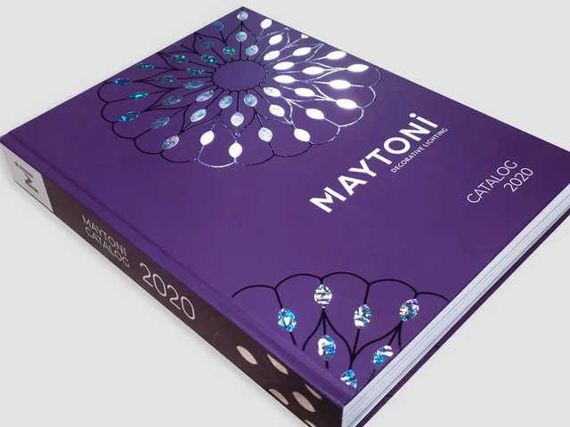
Виды переплёта
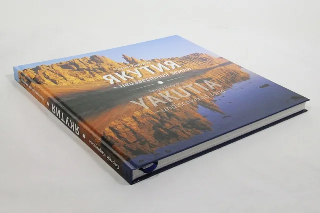
вид переплета 7БЦ
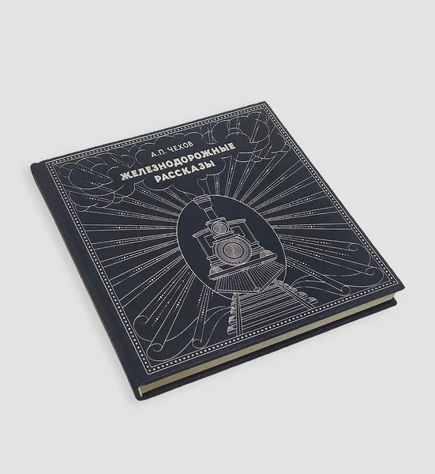
Виды переплёта
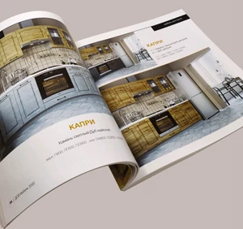
вид переплета - мягкий кбс
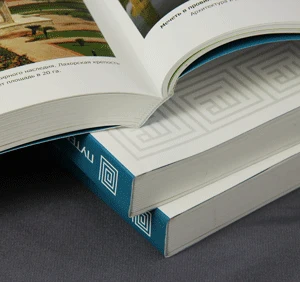
виды переплета мягкий с шкс
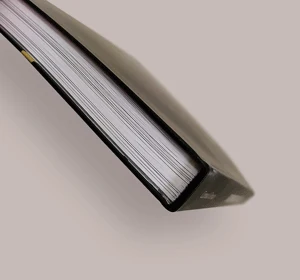
вид переплета - интегральный
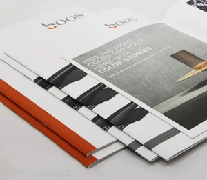
переплет на металлическую скобу
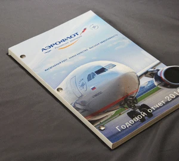
переплет на болтах
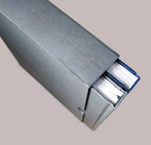
виды переплетов книги в футлярах
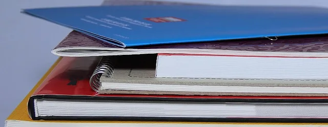
все вид переплетов книг в Полиграфическом комплексе
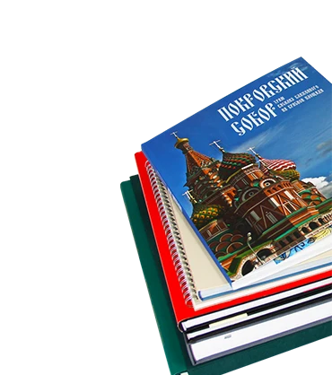
Виды переплёта
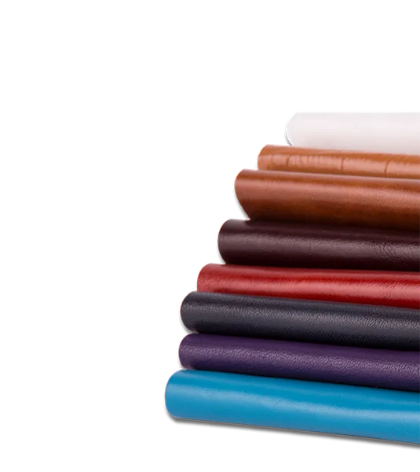
Виды переплёта